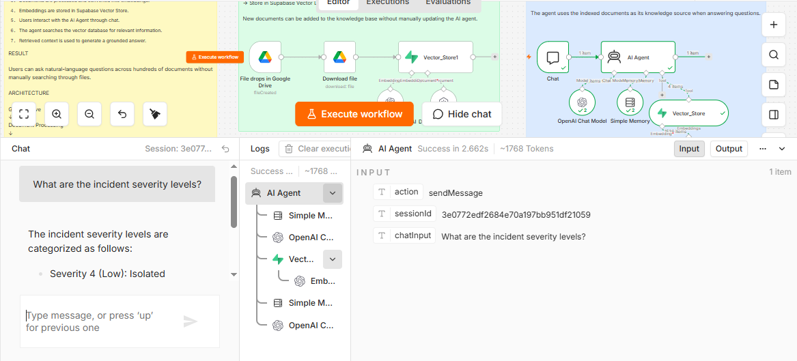

CASE STUDY / 01
AI-Powered Company
Knowledge Base
A Retrieval-Augmented Generation system that transforms business documents into an instantly searchable AI knowledge assistant.
THE PROBLEM
The information exists. Finding it is the problem.
Businesses accumulate SOPs, policies, onboarding guides, process manuals, and internal documentation. As the library grows, employees can spend unnecessary time opening files, searching for keywords, and figuring out which document contains the answer.
The goal was to make that knowledge accessible at the speed of conversation.
THE ARCHITECTURE
Two workflows. One knowledge system.

01 / INGESTION
Turn documents into searchable knowledge.
Documents are placed in Google Drive. The ingestion workflow downloads the file, processes the content, generates embeddings, and stores the resulting knowledge in Supabase Vector Store.
02 / RETRIEVAL
Ask the knowledge base in natural language.
The user submits a question through the chat interface. The AI Agent can use the vector store as its knowledge source, retrieve relevant context, and formulate an answer grounded in the indexed documents. Conversation memory supports follow-up questions.
VALIDATION
I tested the system with a controlled document set.
Five fictional NexaCore Solutions SOPs were created to test factual, numerical, policy, exception, and conversational retrieval.
LIVE TEST
Does it retrieve the right answer?
I asked the agent: “What are the incident severity levels?”
The system retrieved information from the IT Security Incident Response SOP and returned the relevant severity classification.
- Severity 1 — Critical
- Severity 2 — High
- Severity 3 — Medium
- Severity 4 — Low

WHAT THIS DEMONSTRATES
System Design
Separate ingestion and retrieval pipelines with clear data flow.
RAG Architecture
Private business knowledge is retrieved instead of relying only on model memory.
Integration
Google Drive, n8n, OpenAI and Supabase connected into one system.
Testing
A controlled corpus and targeted questions used to validate retrieval behavior.
WHERE THIS CAN GO
One architecture. Many business applications.
THE BIGGER IDEA
Information shouldn't become less useful because a company has more of it.
The objective is simple: make organizational knowledge accessible at the speed of conversation.
Build something useful ↗